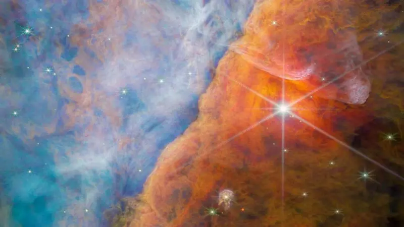
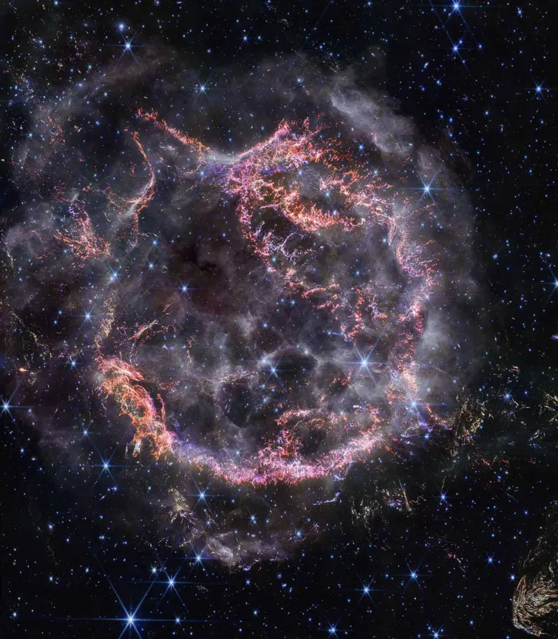
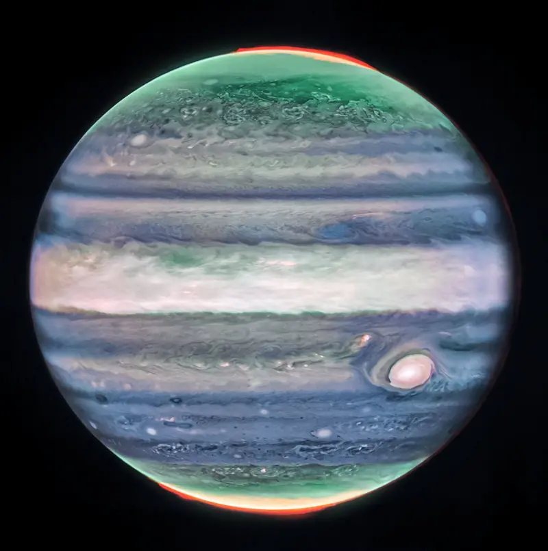
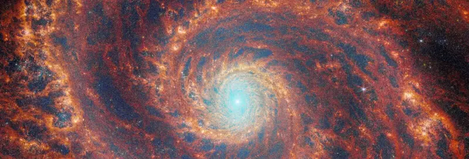
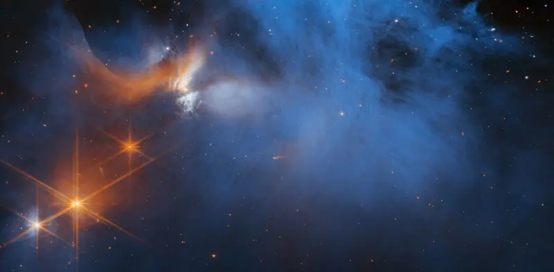
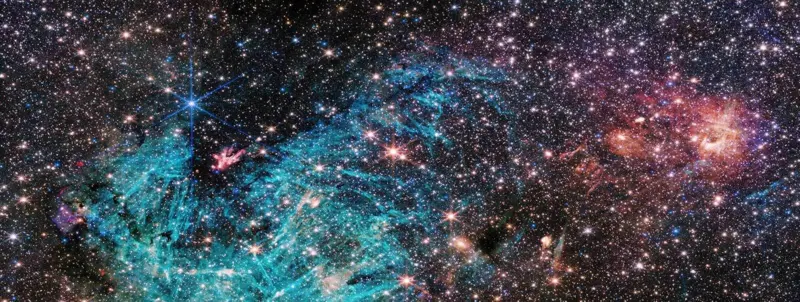
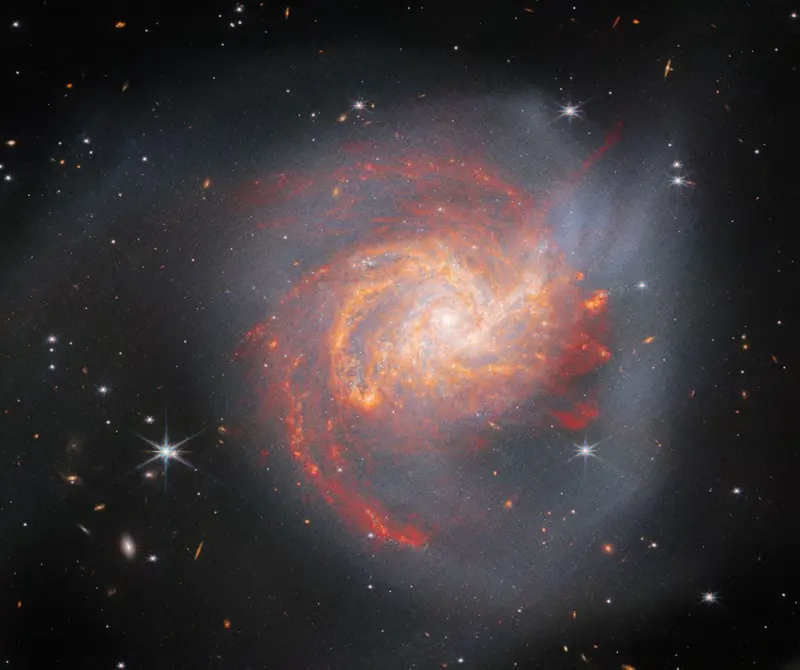
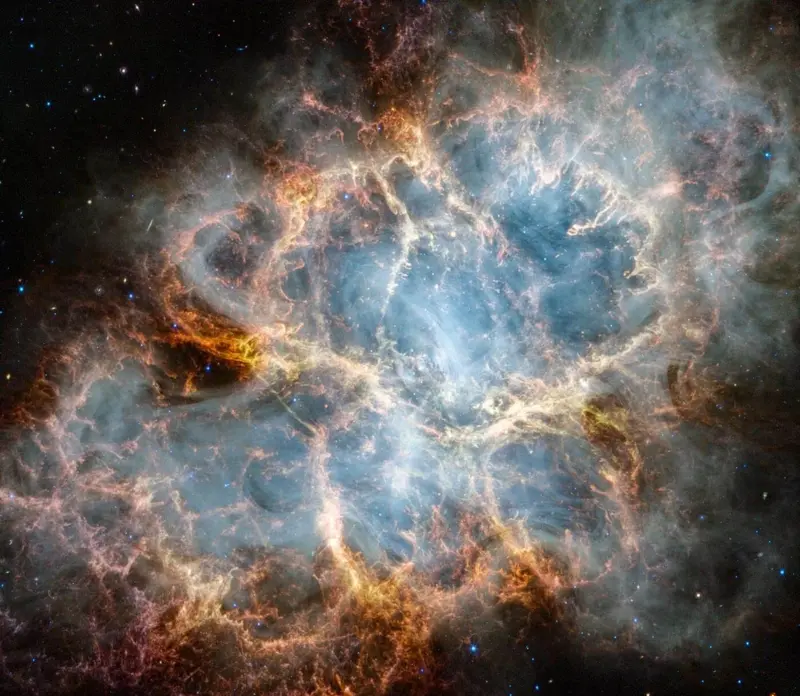

As incríveis imagens do telescópio James Webb após 2 anos de lançamento
1 janeiro 2024
O Telescópio Espacial James Webb — conhecido em inglês pela sigla JWST — foi lançado em órbita há apenas dois anos, mas já começou a redefinir a nossa visão sobre o Universo primordial.
Maravilhe-se com a extraordinária coleção de imagens de James Webb nesta página — desde os confins mais distantes do Universo até os objetos familiares próximos, que estão em nosso Sistema Solar.
CASSIOPEIA A | As camadas de detritos em expansão de Cas A, uma estrela explodida (ou supernova). O anel principal dela tem cerca de 15 anos-luz de diâmetro.
É incrível pensar que a geração de imagens não é realmente a maior carga de trabalho deste telescópio.
É assim que os cientistas conseguem recuperar informações importantes sobre a química, a temperatura, a densidade e a velocidade dos alvos em estudo.
"Você poderia pensar no (telescópio James) Webb como um espectrógrafo gigante que ocasionalmente tira belas fotos", brinca Eric Smith, cientista do programa de pesquisa com o James Webb na Nasa, a agência espacial dos EUA.
JÚPITER | O maior planeta do Sistema Solar, Júpiter, visto em luz infravermelha. Na imagem, as partes mais brilhantes dele aparecem nas altitudes mais elevadas — os topos das nuvens de tempestade convectivas.
Sem ainda usar completamente a sua capacidade, o James Webb tem observado profundamente o cosmos para nos mostrar galáxias tal como elas eram há 13,5 bilhões de anos.
Muitas dessas estruturas cósmicas são mais brilhantes, mais massivas e mais maduras do que muitos cientistas pensavam ser possível logo após o Big Bang, que ocorreu há 13,8 bilhões de anos.
"Certamente pensávamos que veríamos bolhas difusas de estrelas. Mas observamos galáxias totalmente formadas, com braços espirais perfeitos", avalia a professora Gillian Wright, diretora do Centro de Tecnologia em Astronomia do Reino Unido à BBC News.
"Os teóricos trabalham para entender como essas estruturas maduras surgiram tão cedo no Universo. Nesse sentido, o Webb está realmente mudando o pensamento científico", complementa ela.
M51 | A Galáxia do Redemoinho M51 pode ser vista no céu noturno com o uso de aparelhos mais simples. Aqui, o telescópio espacial mais poderoso já lançado usa suas incríveis capacidades para estudar os intrincados braços espirais dela.
CAMALEÃO I | A nuvem molecular Camaleão I está a cerca de 630 anos-luz da Terra. É aqui, a temperaturas de cerca de -260 ºC, que o Webb detectou tipos de moléculas de gelo nunca antes observadas.
SAGITÁRIO C | O telescópio Webb olha para o centro da nossa galáxia, perto de onde há um buraco negro supermassivo. Existem cerca de 500 mil estrelas nesta imagem, que tem ao redor de 50 anos-luz de diâmetro. A cor azulada mais à esquerda destaca a atividade do gás hidrogênio na região.
E não é apenas a eficiência das primeiras galáxias em formar suas estrelas que tem sido uma surpresa para os cientistas. O tamanho dos buracos negros no centro das galáxias também maravilha os especialistas.
Há um "monstro" no centro da nossa Via Láctea que tem quatro bilhões de vezes a massa do Sol. Uma teoria sugere que esses gigantes são criados ao longo do tempo por meio do acúmulo de muitos buracos negros menores produzidos como restos de estrelas que explodiram (as supernovas).
"Mas a evidência preliminar que vem do JWST é que alguns destes primeiros [buracos negros] gigantes podem ter ultrapassado completamente esse estágio estelar", aponta o pesquisador Adam Carnall, da Universidade de Edimburgo, na Escócia.
"Existe um cenário em que enormes nuvens de gás no Universo primordial poderiam ter colapsado violentamente, transformando-se em buracos negros."
NGC 3256 | Isto é o que acontece quando duas galáxias colidem uma com a outra. Estima-se que evento da imagem tenha ocorrido há cerca de 500 milhões de anos. A colisão leva à formação de novas estrelas que iluminam o gás e a poeira ao redor.
NEBULOSA DO CARANGUEJO | A famosa remanescente de supernova foi descrita pela primeira vez por astrônomos chineses em 1054. Ela está localizada a cerca de 6,5 mil anos-luz da Terra, na constelação de Touro.
Quando o telescópio James Webb foi lançado no Natal de 2021, pensava-se que ele teria 10 anos de operações pela frente. Isso porque o aparelho precisa de combustível para manter-se ativo a 1,5 milhão de km da Terra.
Mas o voo dele em direção à órbita de um foguete Ariane, lançado por pesquisadores europeus, foi tão preciso que ele possui reservas de combustível para os próximos 20 anos — se não mais.
Isto significa que, em vez de acelerarem as observações, os astrônomos podem dar-se ao luxo de adotar uma abordagem mais estratégica de trabalho com o telescópio.
"Pensamos que estaríamos 'desandando a receita' [se as observações fossem aceleradas], e não precisamos mais fazer isso", avalia Smith, da Nasa.
Uma atividade que certamente vai acelerar daqui em diante é a prática de fazer "campos profundos" — longas observações para áreas específicas do céu, que permitirão ao telescópio rastrear a luz de galáxias mais fracas e distantes.
É assim que o telescópio provavelmente detectará as primeiras galáxias e possivelmente até algumas das primeiras estrelas que brilharam no Universo.
Sobre o Telescópio
Revelando as belezas do cosmos.
Uma janela para o passado: observando as primeiras.